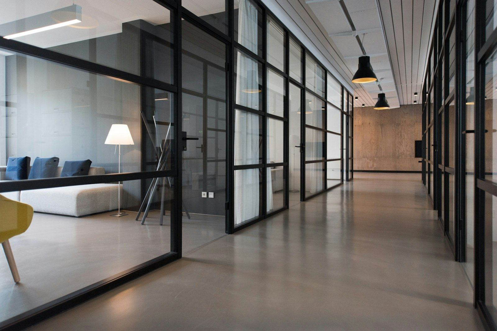

01
Teknologi som skaper fremdrift
Vi bruker innsikt og teknologi for å skape vekst og virkelig forretningsverdi. Det betyr at vi spør hva løsningen skal endre før vi spør hvordan den skal bygges.
Hjem / Om oss
Accelerate er et nordisk konsulentselskap med kontorer i Norge og Sverige. Vi kombinerer teknologi og forretningsforståelse for å skabe vekst og levere målbare resultater – og vi har gjort det lenge nok til å vite at det vanskeligste nesten alltid er det organisatoriske, ikke det tekniske.
Vi er ingeniører, utviklere, dataforskere, arkitekter og rådgivere – men først og fremst folk som liker å se at det vi lager blir brukt. Kundene våre er store virksomheter og mindre selskaper i vekst, i privat og offentlig sektor.
Accelerate utgjør Ivers nordiske konsulentmiljø. Det betyr at vi kan trekke på 1 300 kolleger når oppgaven krever det, uten at du må forholde deg til flere leverandører enn nødvendig.
Vi kommer med egne folk på første møte. Vi sier nei når vi mener nei. Og vi skriver kontrakter der du kan ta over det vi har laget – uten oss.
Se tjenestene våre
Tallene er hentet fra vår egen og Iver-gruppens offentlige informasjon.
Ikke plakater i resepsjonen – men det vi bruker når vi må velge mellom to dårlige alternativer.
Vi bruker innsikt og teknologi for å skape vekst og virkelig forretningsverdi. Det betyr at vi spør hva løsningen skal endre før vi spør hvordan den skal bygges.
Vi bygger varige relasjoner gjennom åpenhet og integritet, og hjelper kundene våre med å ta kloke, strategiske valg – også når det koster oss en bestilling.
Endring er en del av hverdagen. Våre løsninger utvikler seg i takt med kundens behov og ambisjoner, uten at noen må bytte alt hvert tredje år.
Vi utfordrer det etablerte, er nysgjerrige av natur og utvikler løsninger som er tilpasset fremtiden. Nysgjerrighet er en arbeidsoppgave, ikke en hobby.
Vi er utforskere, alltid på jakt etter neste mål. Med drivkraft og en nyskapende tilnærming kommer vi lenger – sammen.
Accelerate er en del av et nordisk miljø med infrastruktur, sky og sikkerhet i verdensklasse.
Morselskap
Ledende nordisk totalleverandør av virksomhetskritiske IT-tjenester og -plattformer. Spisskompetanse innen IT-infrastruktur, cybersikkerhet, data og sky. Cirka 1 300 ansatte på 23 kontorer i Sverige og Norge.
Søsterselskap
Europeisk skyplattform som leverer helautomatiserte infrastrukturtjenester, bygget på åpen kildekode. Trygg, etterlevelsesvennlig og bærekraftig teknologi der kunden beholder kontrollen over egne data.
Vi ansetter for kompetanse og nysgjerrighet – ikke for å fylle en stol. Søknadene går til vårt rekrutteringssystem.
Oslo · Fast
Vil du forme fremtidens dataplattformer hos noen av Norges ledende virksomheter? Du utvikler løsninger som gjør data tilgjengelig, pålitelig og verdifull – med skyteknologi, automatisering og KI som en naturlig del av arbeidshverdagen.
Se stillingen og søkTrondheim · Fast
Vil du være med å forme fremtidens digitale tjenester? Du jobber tett med kundene, tar tekniske veivalg og utvikler sikre og skalerbare tjenester der AI og skyteknologi er en del av hverdagen.
Se stillingen og søkOslo · Fast
Hjelp kundene å få kontroll på hvem som har tilgang til hva. Du jobber med identitet, roller og etterlevelse i virksomheter der feil tilgang er den største risikoen.
Se stillingen og søkOslo · Fast
Bygg utviklerplattformen internt: verktøyene, pipeline-ene og miljøene som gjør at kollegene våre kommer raskere til produksjon.
Se stillingen og søkVi sender gjerne en kort presentasjon av oss selv, eller setter opp en prat med en av fagpersonene våre.